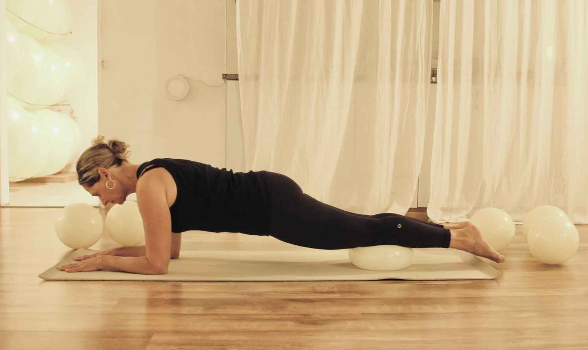
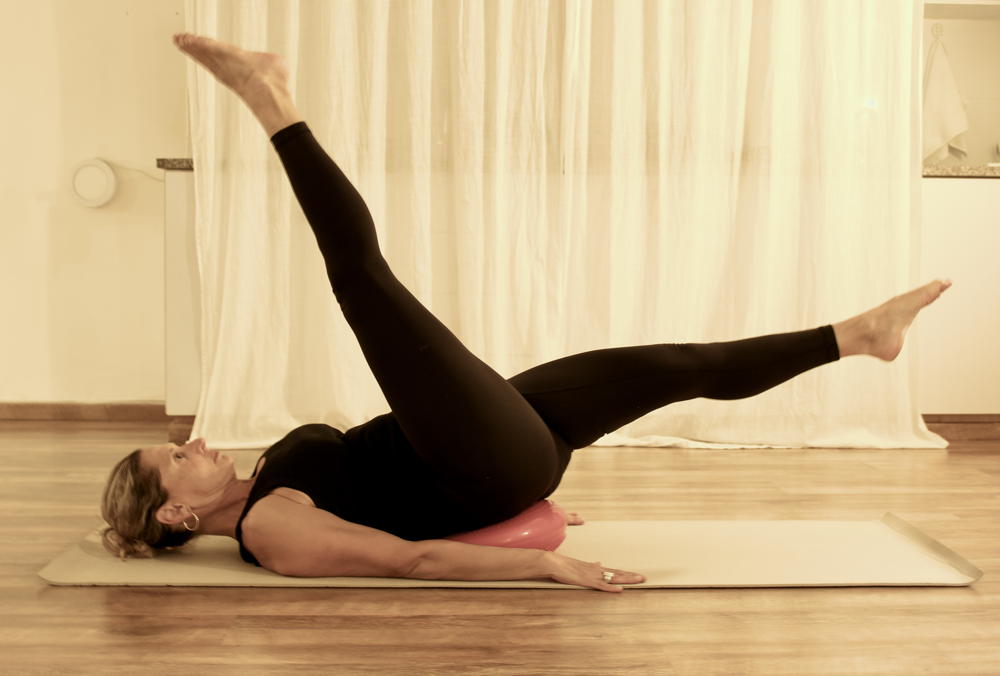
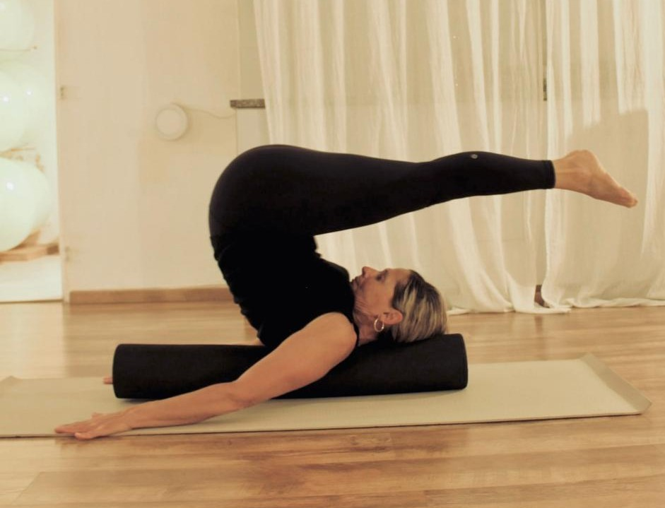
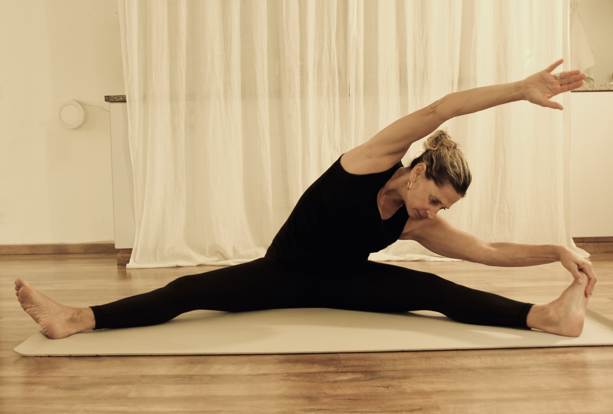
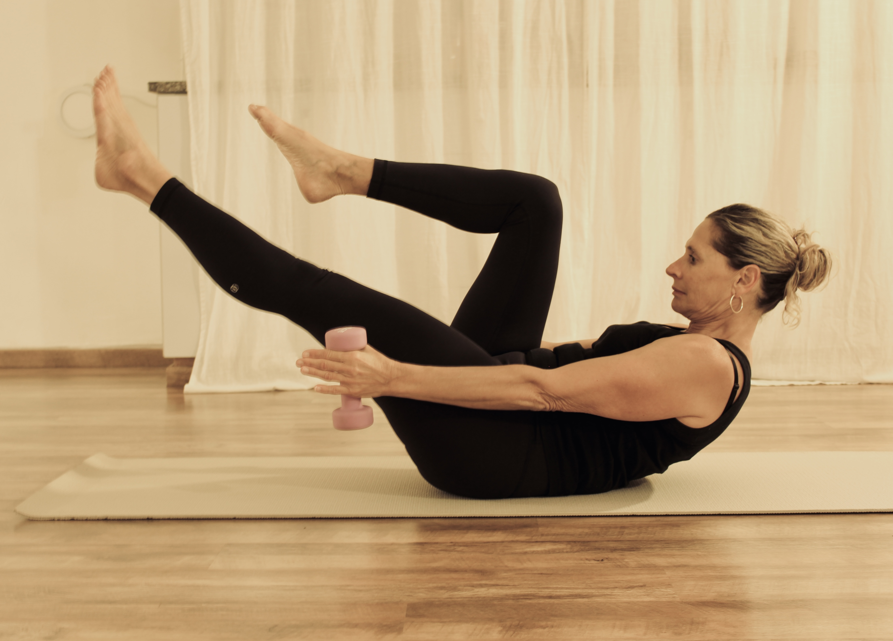
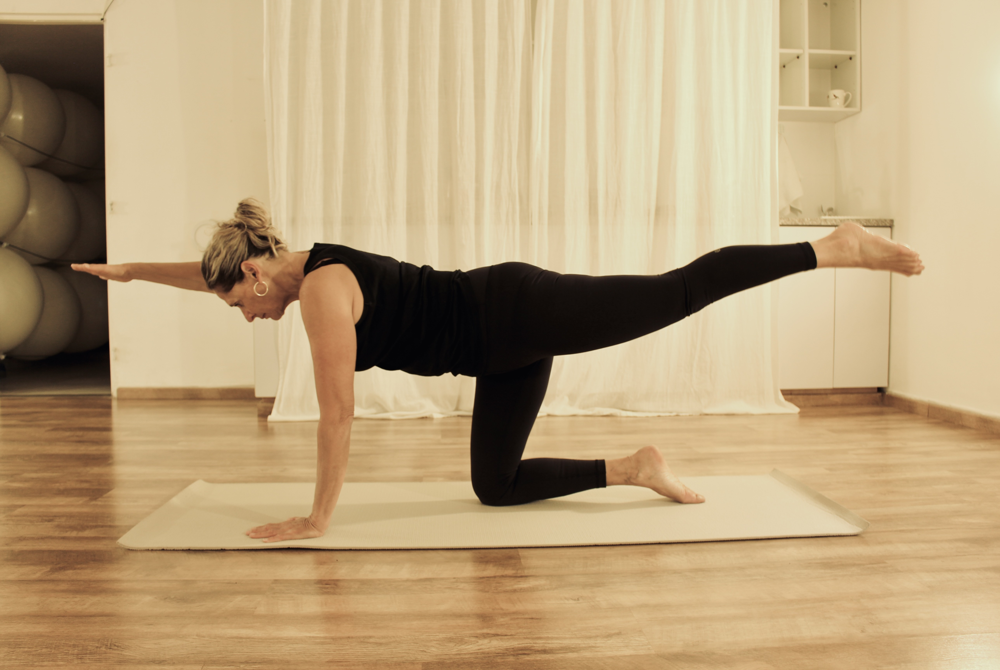

מיכל אבידן
מורה לחינוך גופני בעלת תואר ראשון B.ed משנת 1991 ומלמדת בתיכון הראל במבשרת ציון כבר 21 שנה.
מדריכה לפילאטיס מזרן ומכשירים משנת 2004.
20 שנה בעלת סטודיו לפילאטיס מזרן בהר אדר.
עובדת עם קבוצות קטנות של עד 10 מתאמנים בקבוצה ובנוסף באימונים אישיים.
בעלת ידע עשיר וניסיון בעבודה על יציבה ושיקום אחרי פציעות.

פילאטיס עם כדור גדול
עבודה עם אביזר לא יציב, מייצר אתגר למגוון תרגילי פילאטיס. מאפשר מנחים מאוד נעימים ובריאים לגב ולגוף.
מאתגר את שיווי המשקל ובנוסף גם מאפשר לבצע תרגילים בדרגות קושי שונות פחות מאתגרות ועם תמיכה מהכדור.
מאתגר את שיווי המשקל ובנוסף גם מאפשר לבצע תרגילים בדרגות קושי שונות פחות מאתגרות ועם תמיכה מהכדור.

פילאטיס עם כדור קטן
עבודה עם כדור קטן מאפשרת מגוון רחב של תרגילי חיזוק, יציבה ותמיכה, עם אפשרות להתאמת דרגות קושי שונות.

פילאטיס עם פיתה באלנס
העבודה עם הפיתה משלבת אתגר לשיווי משקל וחיזוק למערכת הפרופריאוצפטית, דבר שמאפשר שיקום לאחר פציעות.
הפיתה כמו אביזרים אחרים יכולה להעלות דרגות קושי בגלל חוסר יציבות ובסיס קטן ומצד שני במנחים מסויימים נותנת תמיכה ומורידה דרגת קושי.
הפיתה כמו אביזרים אחרים יכולה להעלות דרגות קושי בגלל חוסר יציבות ובסיס קטן ומצד שני במנחים מסויימים נותנת תמיכה ומורידה דרגת קושי.

פילאטיס עם גליל
עבודה עם אביזרים היא מוסיפה אתגר לעבודה ולעיתים מאפשרת ומסייעת לבצע תרגילים שלא הצלחנו ללא האביזר.
הגליל הוא אחד האביזרים הטובים לממש מטרות אלה.
הצורה הצרה שלו והאופי הלא יציב מאתגרים את שיווי המשקל בעת ביצוע תרגילים מרפרטואר הפילאטיס.
בנוסף, בגלל החומר הדחוס שלו אנו משתמשים בו לעיסוי רקמות בכל אזורי הגוף השונים.
הגליל הוא אחד האביזרים הטובים לממש מטרות אלה.
הצורה הצרה שלו והאופי הלא יציב מאתגרים את שיווי המשקל בעת ביצוע תרגילים מרפרטואר הפילאטיס.
בנוסף, בגלל החומר הדחוס שלו אנו משתמשים בו לעיסוי רקמות בכל אזורי הגוף השונים.

שיעור תנועה ומתיחות
עם הגיל אנחנו מאבדים תנועתיות וטווחי תנועה, ולכן בנוסף לשיעורים הקבועים בסטודיו בהם אנחנו משלבים עבודה של תנועתיות וגמישות,
אנחנו לעיתים מתמקדים בנושא זה אימון מלא.
זה חשוב ליציבה שלנו ולתחזוקה טובה של גוף בריא עם יעילות תנועתית.
אנחנו לעיתים מתמקדים בנושא זה אימון מלא.
זה חשוב ליציבה שלנו ולתחזוקה טובה של גוף בריא עם יעילות תנועתית.

פילאטיס עם משקולות
מאפשר להוסיף דרגת קושי בחיזוק שרירי תנועה וליבה.
חיזוק פלג גוף עליון בדגש על יציבה בריאה.
לעיתים משלבים את המשקולות עם אביזר נוסף כמו פיתה בלאנס או גליל.
חיזוק פלג גוף עליון בדגש על יציבה בריאה.
לעיתים משלבים את המשקולות עם אביזר נוסף כמו פיתה בלאנס או גליל.

פילאטיס מזרן קלאסי
עבודה על רפרטואר התרגילים של ג׳וזף פילאטיס, עם וריאציות וגיוונים.
עבודה על תנועה, חיזוק שרירי ליבה, דגשים על עקרונות השיטה: זרימה, נשימות, הפרדה תנועתית, שיווי משקל ועוד.
עבודה על תנועה, חיזוק שרירי ליבה, דגשים על עקרונות השיטה: זרימה, נשימות, הפרדה תנועתית, שיווי משקל ועוד.
צור קשר
כתובת: נוף הרים 59ב, הר אדר
טלפון: 054-6202296
אימייל: mutsnik@gmail.com